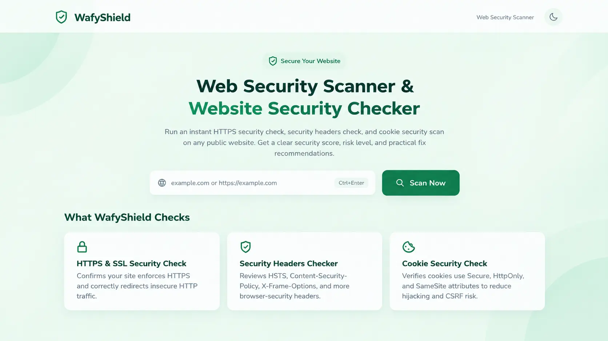
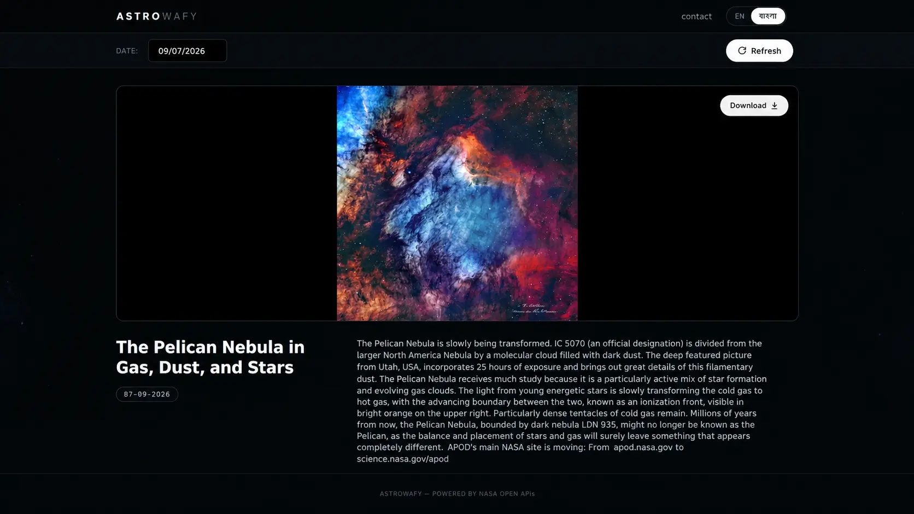

PROJECTFULL STACK

WAFYURL
Links, QR codes
& live analytics.
A Flask-based link management platform built around short links, QR generation and analytics.
Flask · JS
WAFY / INDEPENDENT BUILD LAB
Wafy Lab is the workshop behind my projects — a place for shipped products, experiments, prototypes, weird ideas and the lessons they leave behind.
Enter the labTHE WORKBENCH
Not a portfolio grid. These are snapshots of things that made it out of the lab.
WAFYSHIELD
A serverless tool that inspects HTTPS, SSL/TLS, security headers and cookie security, turning technical signals into a simple risk score.

WAFYURL
A Flask-based link management platform built around short links, QR generation and analytics.

WAFYDEV
A client-side developer suite for everyday utilities, designed to stay lightweight and dependency-free.

ASTROWAFY
An API-powered astronomy experience built around NASA's Astronomy Picture of the Day.
HOW THE LAB WORKS
Start with something worth solving, automating, understanding or simply trying.
Build the smallest useful version. Constraints are part of the experiment.
Find the weak points — technical, architectural, UX or operational.
Keep the decisions, mistakes and lessons instead of pretending the first version was perfect.
Wafy Lab is the independent project laboratory of Afee Muhammod Wafy. It documents the software behind the experiments: full-stack web applications, developer tools, web security projects, API integrations, prototypes, and the lessons that come from shipping them.
LAB NOTE
"The point isn't to make every experiment a product. The point is to become better at building the next one."
— Afee Muhammod Wafy